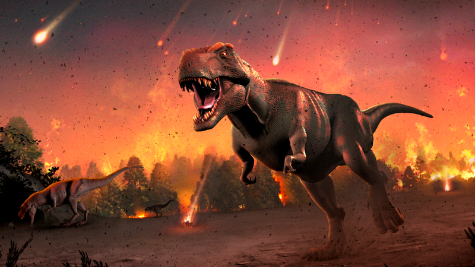

Os dinossauros foram criaturas pré-históricas que dominaram a Terra durante a Era Mesozoica, há milhões de anos. Eles variavam em tamanho, forma e hábitos alimentares, desde os temíveis predadores como o Tiranossauro Rex até os herbívoros pacíficos como o Triceratops.
A descoberta de fósseis e evidências paleontológicas revelou muito sobre a vida e o comportamento dos dinossauros. Os paleontologistas estudam essas descobertas para entender melhor como essas criaturas antigas viveram e interagiram com seu ambiente.
A extinção dos dinossauros ocorreu há cerca de 65 milhões de anos, marcando o fim da Era Mesozoica e abrindo caminho para a ascensão de novas formas de vida, como os mamíferos. As causas exatas dessa extinção ainda são objeto de debate entre os cientistas.
Apesar de terem desaparecido há muito tempo, o legado dos dinossauros continua a nos fascinar e intrigar. Seu estudo nos ajuda a entender melhor a história da vida na Terra e a apreciar a incrível diversidade que existiu em nosso planeta ao longo do tempo.
